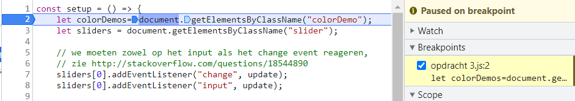
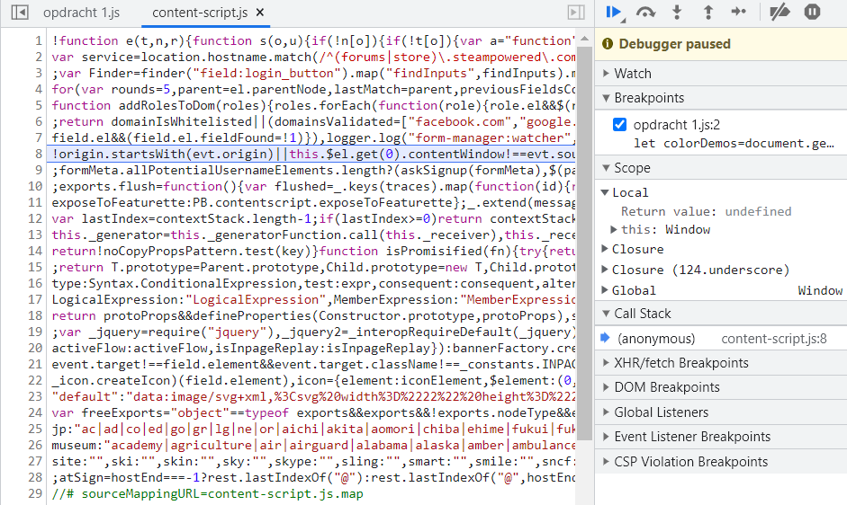
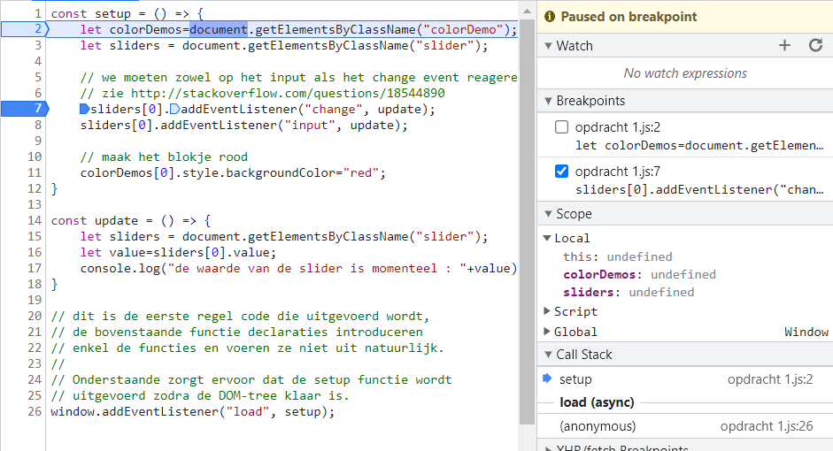
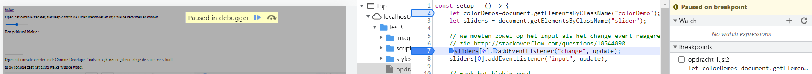

Zet een breakpoint op de eerste regel van de setup function en herlaad de pagina. De uitvoering zal stoppen bij dit breakpoint.
Wat voor soort waarde zit er in die variabelen?
Hoeveel elementen zitten er in elke verzameling?
5
Kun je uit de HTML-code afleiden waarom er dit precies zoveel zijn?
omdat het zoekt naar getElementByClassName.
Klik op het driehoekje naast de sliders lokale variabele zodat je het eerste element kunt zien. Op welke index positie in de lijst staat dit element?
op de 2de plaats.
Zet nu een breakpoint op de eerste regel van de update function, die een event listener is voor de input en change events van de slider.
Laat de uitvoering van het programma weer verder lopen
blokje kleurt niet meer rood
